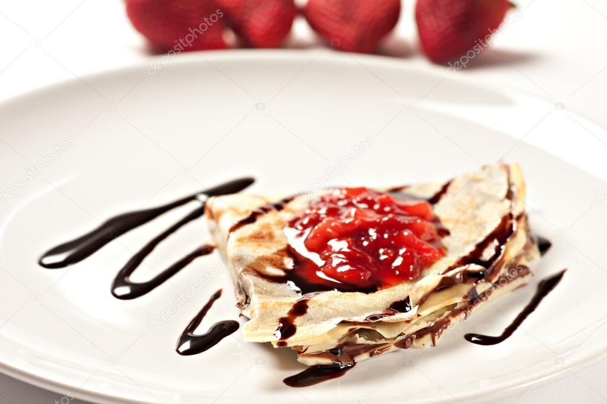

Desert Crepes

How to make a Desert Crepe
- step 1:In large bowl, whisk together eggs, milk, melted butter, flour sugar and salt until smooth.
- step 2:Heat a medium-sized skillet or crepe pan over medium heat. Grease pan with a small amount of
butter or oil applied with a brush or paper towel. Using a serving spoon or small ladle, spoon about 3 tablespoons crepe batter into
hot pan, tilting the pan so that bottom surface is evenly coated. Cook over medium heat, 1 to 2 minutes on a side, or until golden brown. Serve immediately..
Home Page